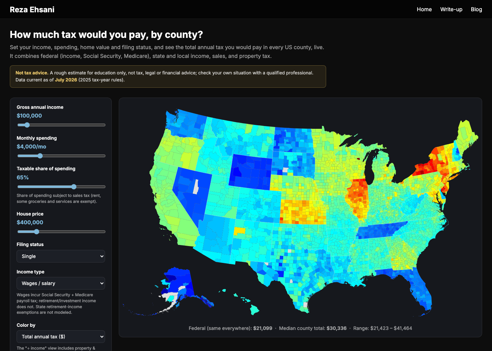

What Taxes Do You Actually Pay?
Taxes come up all the time: in the news, at dinner, at the ballot box. Yet most people cannot actually list all the taxes that come out of their money each year. We feel the total, argue about one slice of it, and rarely see the whole picture. So here is the full stack in plain terms, followed by a tool I built so you can estimate it for your own situation.
1. Federal income tax: the brackets
This is the big one. The federal government taxes income in tiers: the first slice at 10%, then 12%, 22%, 24%, 32%, 35%, and 37% at the very top. These are marginal rates, which is where people trip up. Landing in a higher bracket does not tax all of your income at that rate, only the dollars above the bracket line. That is why your effective rate, the total you pay divided by what you earn, always comes out below your top bracket. A single filer on $100,000 owes about $13,000 in federal income tax, closer to a 13% effective rate than the 22% bracket they sit in.
2. FICA: Social Security and Medicare
Separate from income tax, and easy to forget because your employer withholds it automatically, is the payroll tax on your wages:
- Social Security takes 6.2% of your wages, but only up to a yearly cap (about $176,100 in 2025). Earn more than the cap and this one stops.
- Medicare takes 1.45% of all your wages with no cap, plus an extra 0.9% on anything above $200,000 (single) or $250,000 (married).
For a typical wage earner that is another 7.65% off the top, on top of income tax. If your money comes from retirement or investments rather than a paycheck, you do not pay it, which is why the tool lets you switch the income type.
3. State and local income tax
Then your state takes a cut, or it doesn't. Nine states, including Texas, Florida, and Washington, have no income tax on wages at all. The rest range from a flat few percent up to 13.3% at the top in California. Some places also stack a local income tax on top: cities and counties in Ohio, Pennsylvania, Maryland, and Indiana, plus New York City, among others. Two people on the same salary can owe very different amounts depending on where they live.
4. Sales tax: on what you spend
This one keys off spending, not income. Every taxable purchase adds a combined state, county, and city rate that runs from zero in a few states to over 10% in parts of Louisiana, Illinois, and Washington. Not all of your spending is taxed, though. Rent isn't, and in many states groceries and services aren't either. What matters is the share of your spending that is actually taxable, so the tool lets you set that share with a slider and applies the local sales rate to it.
5. Property tax: on your home
If you own a home, your county taxes its value every year. Effective rates swing widely by location, from under 0.4% in parts of Hawaii and Alabama to over 2% across New Jersey, Illinois, and much of Texas. On a $400,000 home that is the gap between roughly $1,500 and $8,000 a year, for the same house.
Your total depends on your situation
There is no single "tax rate." What you actually pay comes out of how a handful of things about you interact:
- your filing status, which sets the brackets and the standard deduction;
- how much you earn, which drives federal, state, local, and payroll taxes;
- how much you spend, which drives sales tax;
- what your home is worth, which drives property tax;
- and where you live, which sets the state, local, sales, and property rates.
Change any one of them and the total moves. Someone with a high salary who rents in Texas can end up with a very different bill from someone who earns less but owns an expensive home in New Jersey, before you even compare their paychecks.
So I built a map
Rather than keep this abstract, I put it into a tool you can drive with your own numbers. Set your income, monthly spending, home value, filing status, and income type, and it shows the total annual tax you would pay in every county in the country, updating as you move the sliders. Hover over any county to see the full breakdown.

The rates behind it come from public sources: the IRS and the Tax Foundation for federal and state brackets, the Census Bureau for property, the Streamlined Sales Tax project and state revenue departments for sales, and municipal registers for local income tax. It is an estimate, not a tax return. It models wage or retirement income with the standard deduction and leaves out the many credits and special cases a real filing involves. You can find the full list of assumptions inside the tool. And, one more time, this is not tax advice.